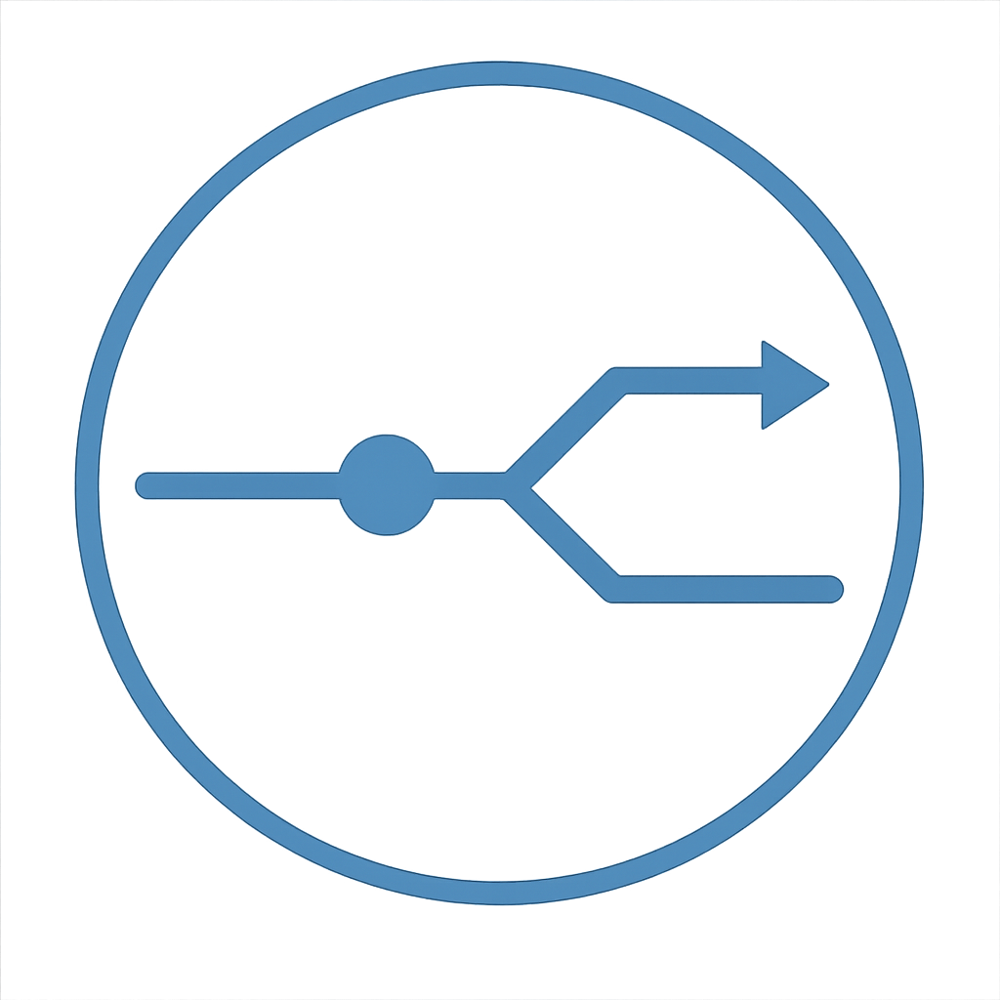
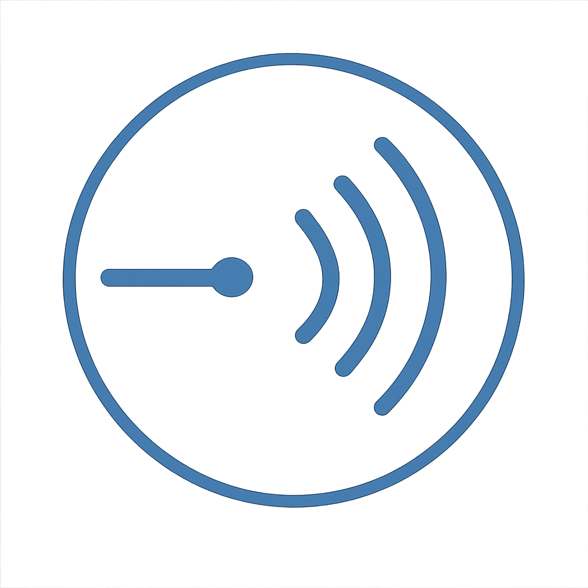
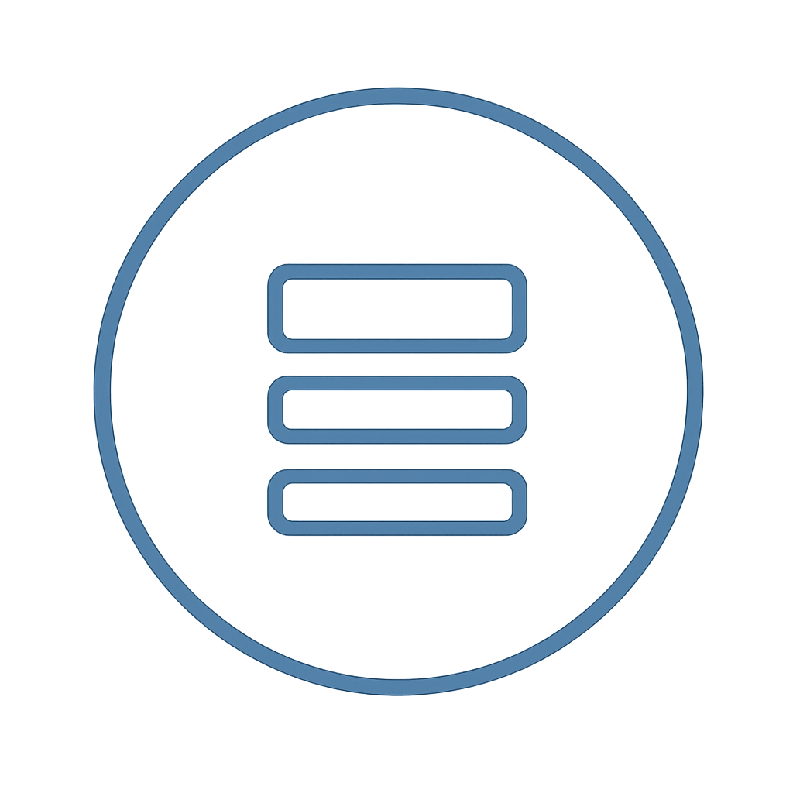

KRAXILOTH
Intent in. Sound out.
Listen
Music
Echoes From the Void (2025)
Debut full-length symphonic metal album.
Other releases
Apex Predator (2025) —
Spotify
/
YouTube
Terminal Drift (2025) —
Spotify
/
YouTube
The Collective

The Operator (Human)
Direction, composition, intent, final decisions.

The Voice (Suno)
Voice & generative exploration.

The Mind (ChatGPT)
Structure, refinement, narrative cohesion.
Signal Fragments (for the attuned)
Fragment I: The Fracture
Fragment II: Transmission Burn
Fragments III–V [restricted]